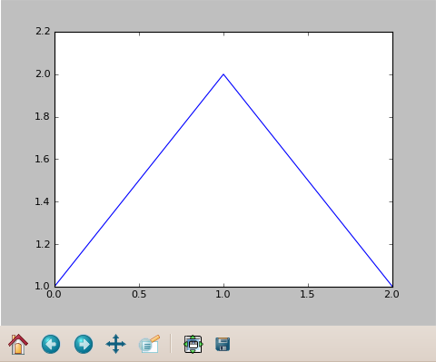

A patch to Reinteract allows extensions to manipulate the output that goes to the notebook. refigure2 can take advantage of this ability to solve two annoyances.
This example illustrates two annoyances in the design of refigure2.
with figure() as f:1 plot([1,2,1]) f1
[<matplotlib.lines.Line2D object at 0x9f792ec>]2

Both of these problems could be fixed if extensions could manipulate the output that goes to Reinteract. To allow this, Owen Taylor wrote this patch for Reinteract. It has yet to be added to the trunk, so you will have to apply it yourself to get the new behavior. (If you're using git, you'll need the git am command.) This isn't necessary — refigure2 will continue to work with the stock Reinteract. But you'll need it to get the following behavior.
When the patch is applied, refigure2 does two things differently:
print statements still work.with figure():
plot([1,2,1])
print "Only the output I want!"
Only the output I want!
This second feature only disables the display of the return values; the plot commands still return the same values, so you can still do lines = plot(...). If you wish to re-enable the display of these values, pass the disable_output=False keyword pair to figure().
These two changes together ensure that old code will still work with the new version of refigure2. The call of the figure object won't produce output anymore, but the with block will output the figure instead. If you use disable_output=False with old code, however, you may end up with two figure widgets output at the same time. So don't do that!
Robert Schroll, rschroll at gmail dot com